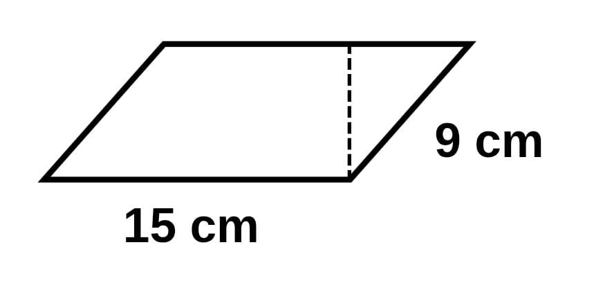
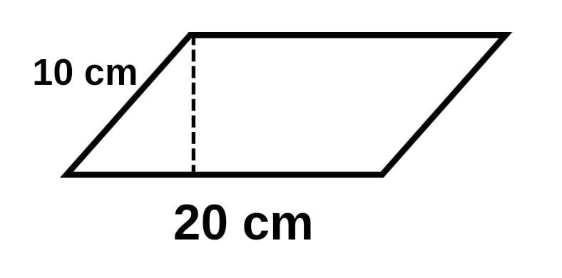
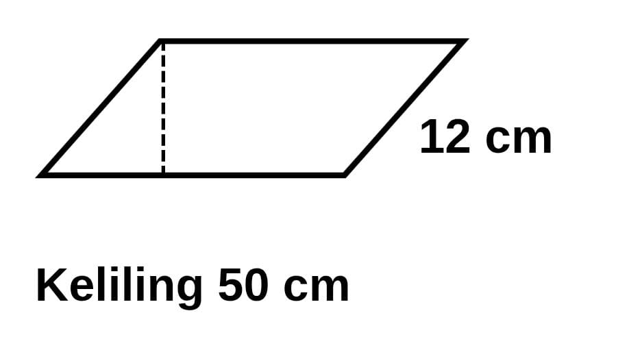
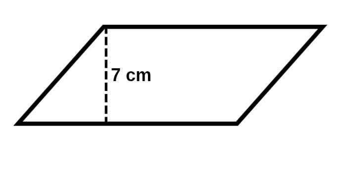
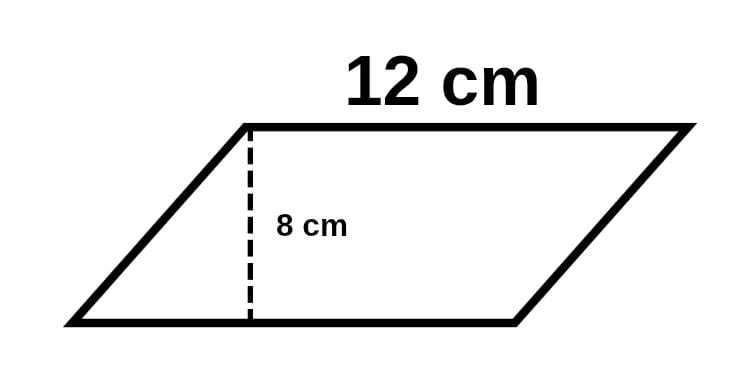
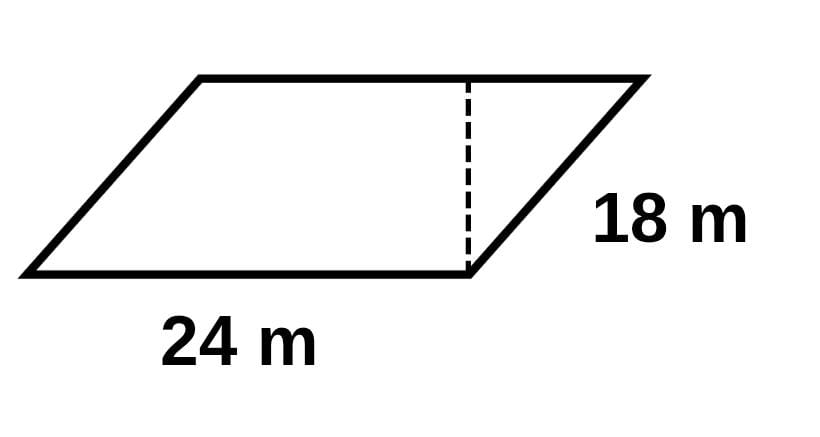
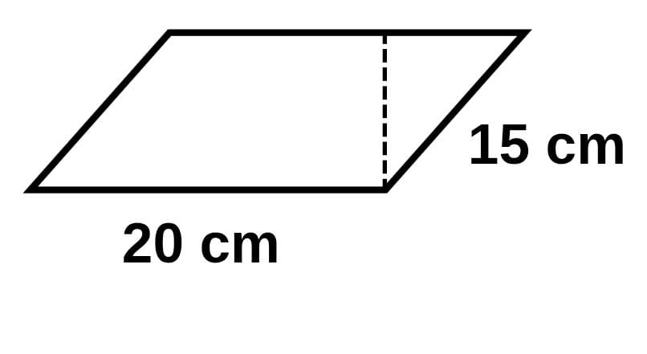
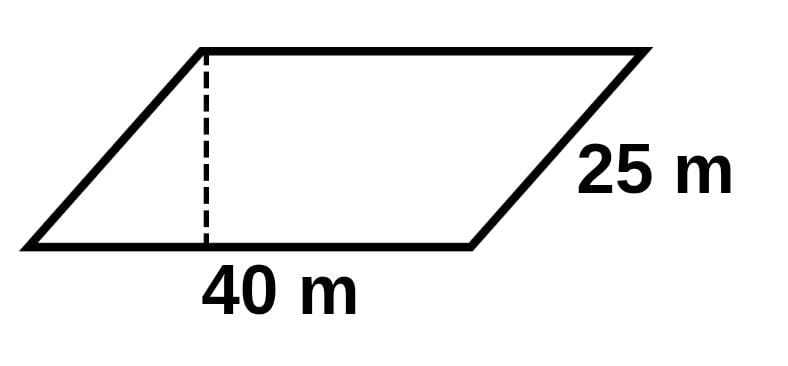

📐 Soal Kuis – Geometri (Jajar Genjang)
1.
Keliling jajar genjang dengan alas 15 cm dan sisi miring 9 cm adalah … cm

A. 60 cm
B. 58 cm
C. 48 cm
D. 65 cm
2.
Jajar genjang dengan alas 20 cm dan tinggi 10 cm mempunyai luas … cm²

A. 200 cm²
B. 199 cm²
C. 201 cm²
D. 100 cm²
3.
Jika keliling jajar genjang 50 cm dan sisi miringnya 12 cm, maka panjang alasnya adalah … cm

A. 15
B. 12
C. 31
D. 13
4.
Jika luas jajar genjang 84 cm² dan tingginya 7 cm, maka alasnya adalah … cm

A. 16
B. 21
C. 12
D. 31
5.
Sudut yang berdekatan pada jajar genjang jika dijumlahkan hasilnya adalah …
A. Sudut yang berdekatan pada jajar genjang jumlahnya 180°
B. Sudut yang berdekatan pada jajar genjang jumlahnya 90°
C. Sudut yang berdekatan pada jajar genjang jumlahnya 160°
D. Sudut yang berdekatan pada jajar genjang jumlahnya 360°
6.
Sebuah jajar genjang memiliki alas 12 cm dan tinggi 8 cm. Berapakah luas jajar genjang tersebut?

A. 99 cm²
B. 97 cm²
C. 98 cm²
D. 96 cm²
7.
Sebuah taman berbentuk jajar genjang memiliki sisi alas 24 m dan sisi miring 18 m. Pak Supri ingin memasang pagar di sekeliling taman itu. Berapakah panjang pagar yang harus disiapkan Pak Supri?

A. 88 m
B. 87 m
C. 85 m
D. 84 m
8.
Sebuah papan kayu berbentuk jajar genjang memiliki keliling 80 cm. Jika panjang salah satu sisinya adalah 25 cm, berapakah panjang sisi lainnya?
A. 15 cm
B. 35 cm
C. 25 cm
D. 33 cm
9.
Seorang siswa membuat bingkai foto berbentuk jajar genjang dengan sisi alas 20 cm dan sisi miring 15 cm. Jika ia ingin menempelkan pita di sepanjang tepi bingkai, berapakah panjang pita yang dibutuhkan?

A. 50 cm
B. 60 cm
C. 72 cm
D. 70 cm
10.
Sebuah kebun berbentuk jajar genjang memiliki sisi alas 40 m dan sisi miring 25 m. Setelah diukur, ternyata Pak Rudi ingin menanam pohon di sepanjang keliling kebun tersebut setiap jarak 5 m. Berapa jumlah pohon yang bisa ditanam Pak Rudi?

A. 25 pohon
B. 26 pohon
C. 22 pohon
D. 30 pohon
Lihat Hasil
🏠 Kembali ke Menu Utama